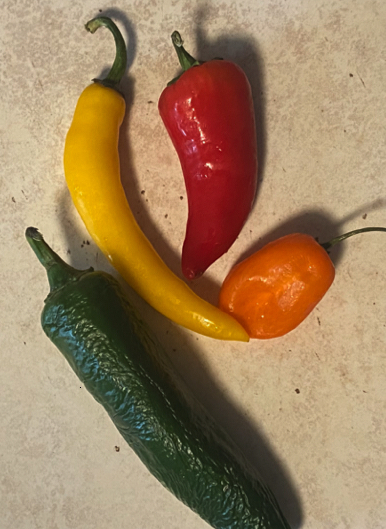

~~~~~~~Scoville Heat Scale~~~~~~~~~~
The scoville scale was named after Wilbur Scoville who used to give human subjects hot chilis to measure their spice levels. Now the amount of scoville heat units in peppers can be measured by counting the particles of capsacin in the peppers themselves. Capsacin is the substance that causes a spicy reaction in people. Contradictory to popular belief, seeds do not contain capsacin the surround tissue near the seeds, the placenta, contains the highest concentration of capcasin.